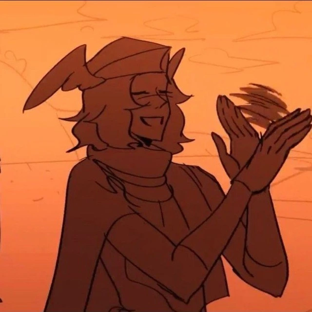
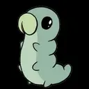

Я интроверт, и не особо хорош в общении с людьми.
Впрочем, есть немногие, но дорогие мне люди.
Немного о них:
- Игорь - друг из Discord, живёт в Якутии, разделяет мои интересы в играх.
-

Настя - одноклассница, хороший и единственный друг в 10-11 классах. Сейчас учится в СГПИ. -

Денис - друг из Discord, играет вместе со мной и Игорем.